模拟测练Simulated PracticeПрактический тест
一、听力ListeningАудирование
第一部分Part IЧасть I
第1—3题： 听短语， 选择正确图片。每题听两次。Questions 1-3: Listen to each phrase and choose the correct picture. Each phrase will be played twice.Задания 1-3: Прослушайте фразы и выберите правильную картинку. Каждая фраза прозвучит дважды.
sān gè píngguǒ例如： 三个苹果
three applesнапример: три яблока例如：
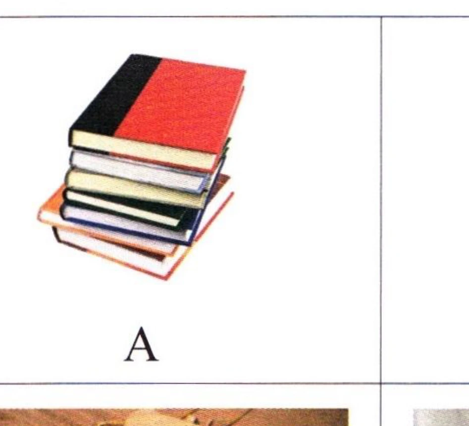
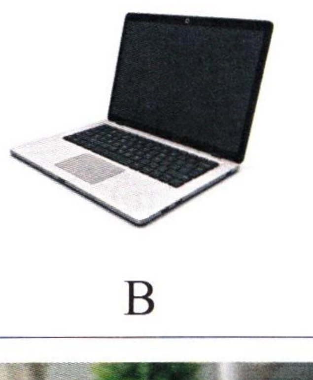
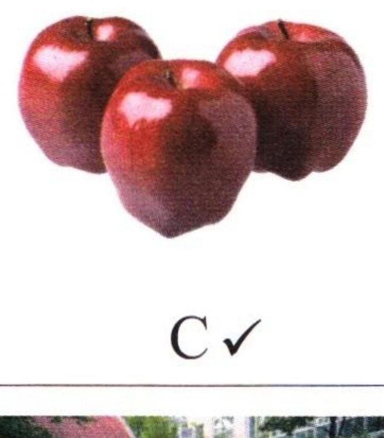
1.
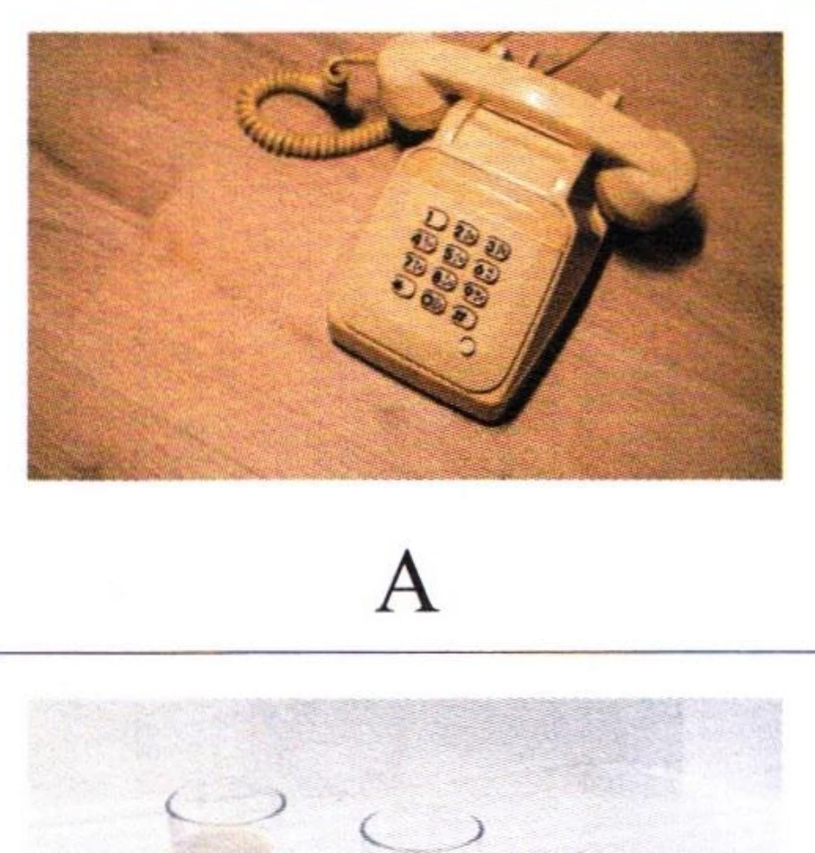
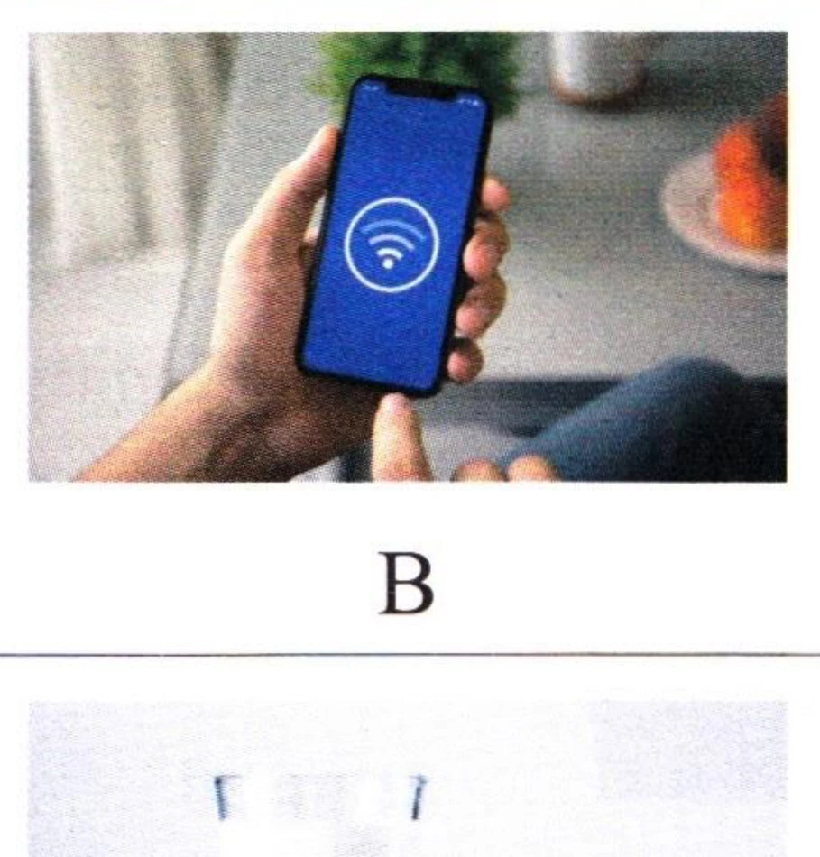
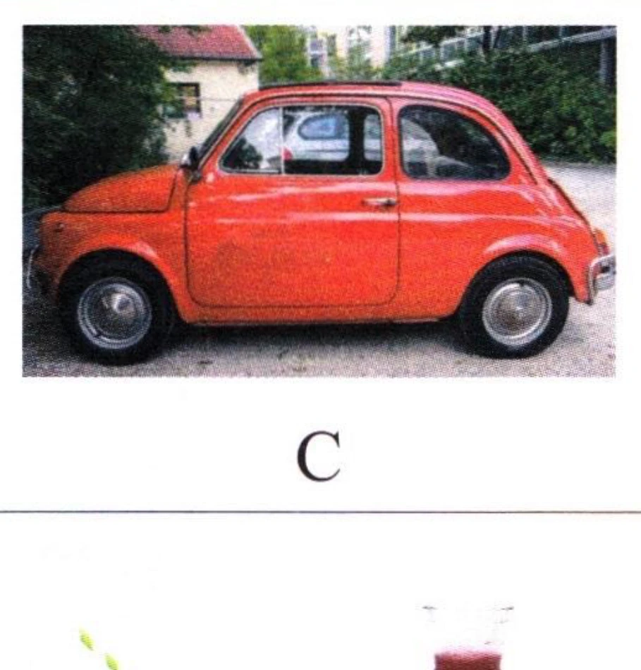
2.
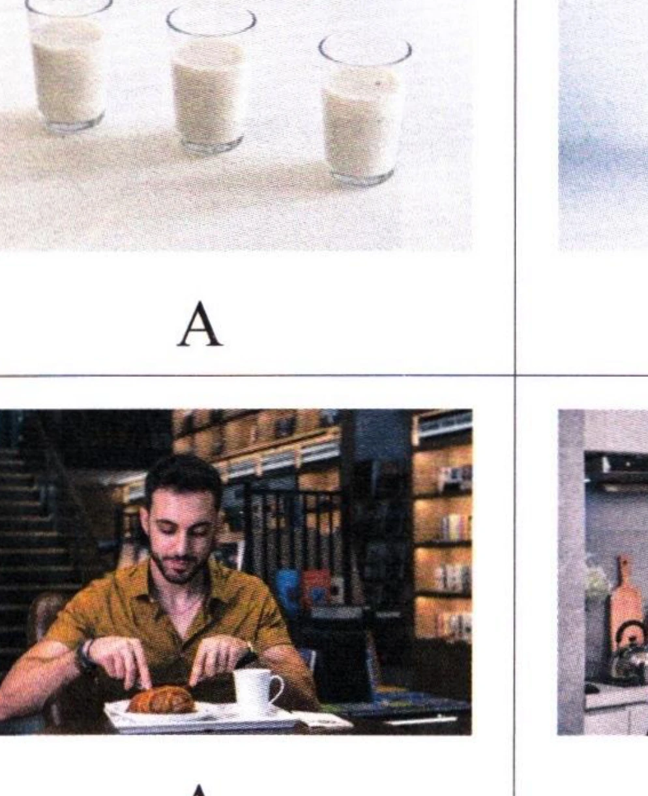
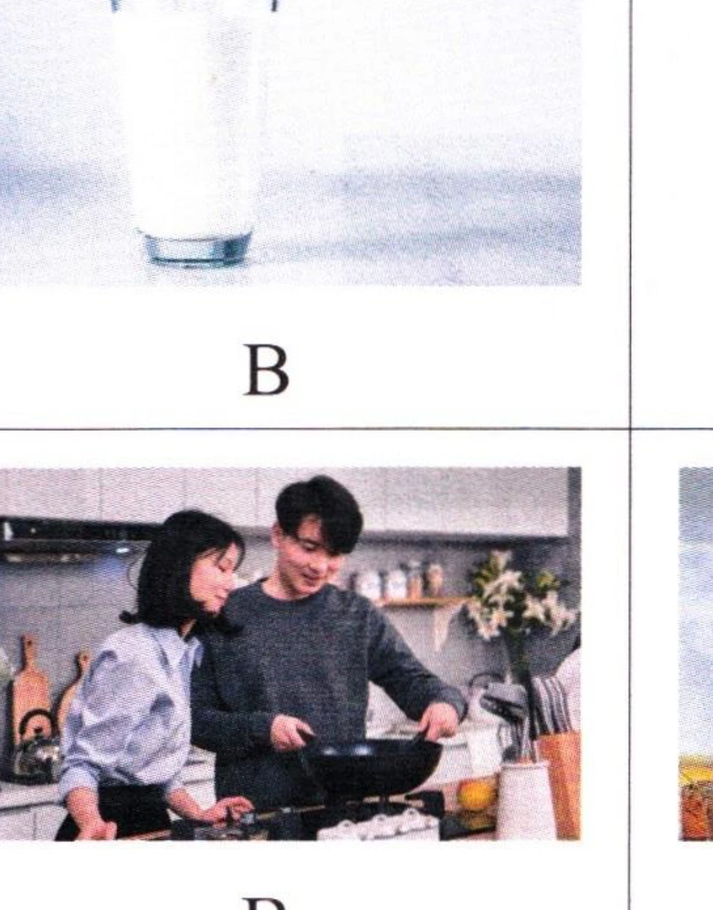
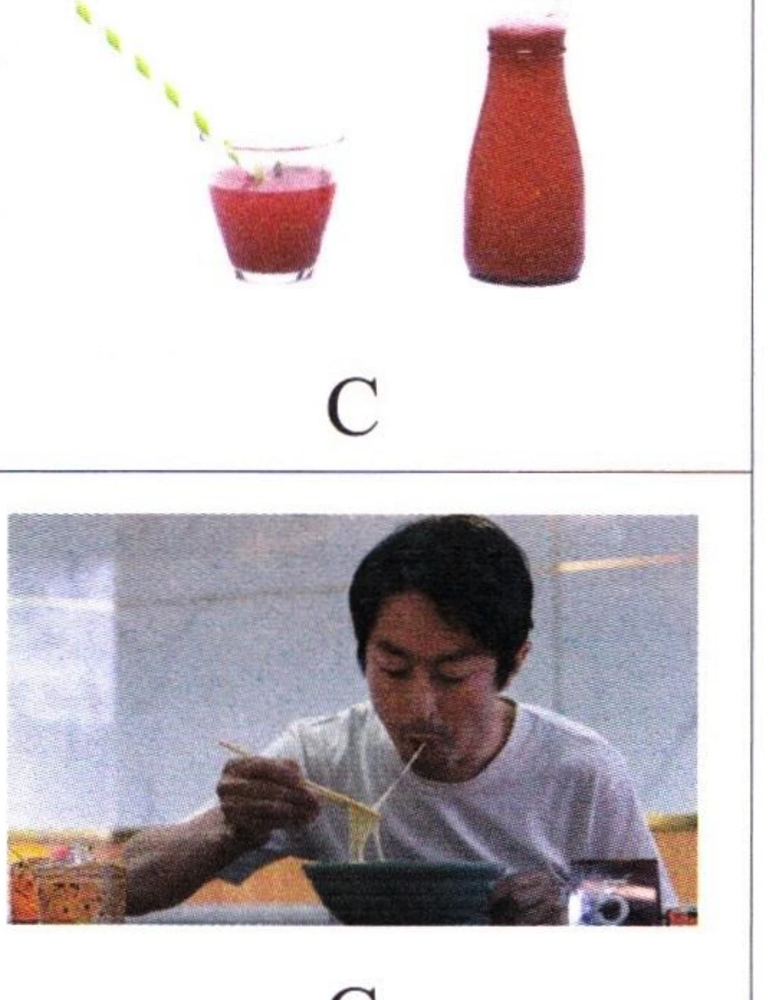
3.
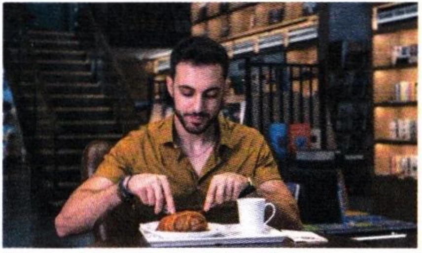
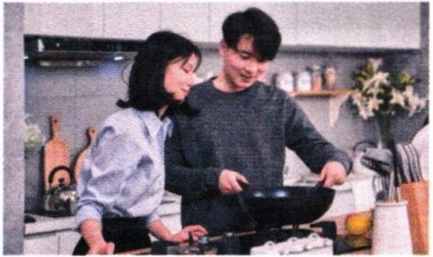
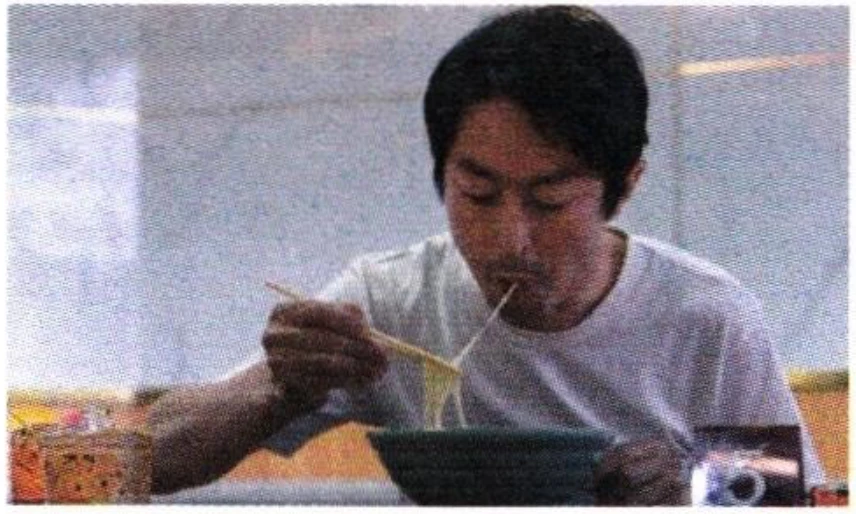